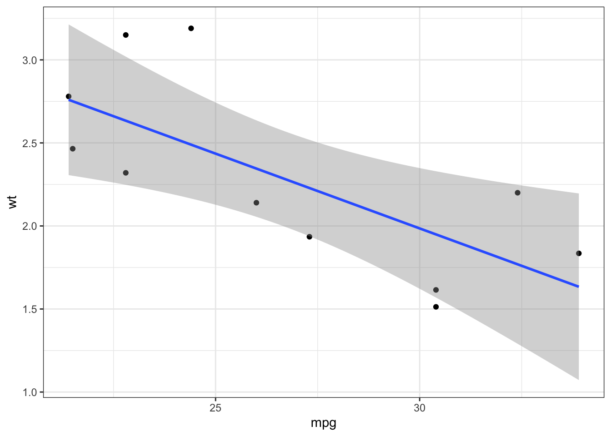
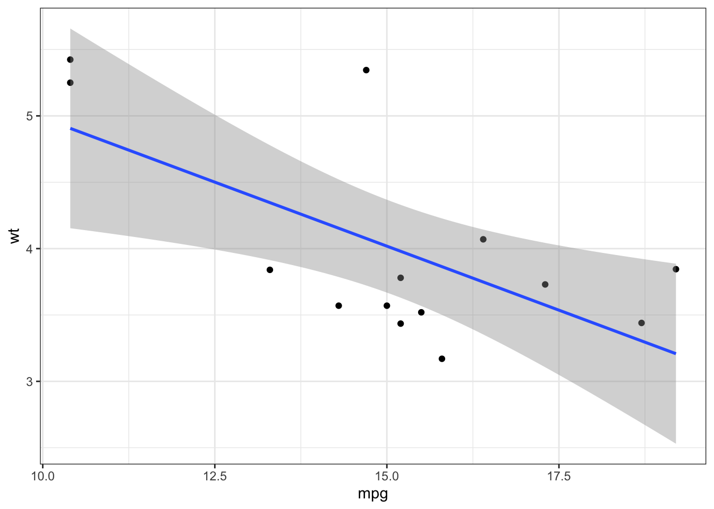

Chapter 3 Everyday iterations
In the previous chapter, I briefly covered writing an iterative function using purrr::map(). In a practical setting, iterations are most useful when we’ve split our data based on some sort of a variable of interest. For example, say we have a dataset containing patient outcome after a treatment with a novel therapeutic. We could split the data based on the type of the therapeutic and iterate a model to compare and contrast treatment effects. On the other hand, we could simply want to apply some sort of a function over multiple columns of a dataset to save the trouble of writing the same function over and over.
A traditional iterative function involves explicitly writing a for loop. Though for loops are often misconstrued as being slower than the functional counterparts (e.g., the apply() family of base R functions), the real down-side of for loops, as Hadley argues in his book, ‘Advanced R’, is that for loops do a poor job in conveying what should be done with the results.
3.1 Iterating over multiple columns using apply(), dplyr, and purrr
Returning to the familiar dataset mtcars, composed of 32 rows and 12 columns:
The basic apply() function needs to know whether you’re iterating over columns or over rows using the MARGIN = argument:
## mpg cyl disp hp drat wt qsec vs
## [1,] 10.50 3 80.0 55.0 1.950 1.3100 8.230 0.0
## [2,] 10.50 3 80.0 55.0 1.950 1.4375 8.510 0.0
## [3,] 11.40 2 54.0 46.5 1.925 1.1600 9.305 0.5
## [4,] 10.70 3 129.0 55.0 1.540 1.6075 9.720 0.5
## [5,] 9.35 4 180.0 87.5 1.575 1.7200 8.510 0.0
## [6,] 9.05 3 112.5 52.5 1.380 1.7300 10.110 0.5
## am gear carb
## [1,] 0.5 2.0 2.0
## [2,] 0.5 2.0 2.0
## [3,] 0.5 2.0 0.5
## [4,] 0.0 1.5 0.5
## [5,] 0.0 1.5 1.0
## [6,] 0.0 1.5 0.5This returns a matrix, as apply() is typically used for an array or a matrix. The one downside with apply() is that the user cannot define what form the output will be in. The side effect of this is that I’ve had to exclude the first column because it contains characters. Running cbind() afterwards to concatenate mtcars[1,] can do the job, though it’s cumbersome. Therefore, it’s often not advisable to run apply() on a dataframe or a tibble. A better method is the dplyr::mutate() solution:
## # A tibble: 32 × 12
## CAR mpg cyl disp hp drat wt qsec
## <chr> <dbl> <dbl> <dbl> <dbl> <dbl> <dbl> <dbl>
## 1 Mazda… 10.5 3 80 55 1.95 1.31 8.23
## 2 Mazda… 10.5 3 80 55 1.95 1.44 8.51
## 3 Datsu… 11.4 2 54 46.5 1.92 1.16 9.30
## 4 Horne… 10.7 3 129 55 1.54 1.61 9.72
## 5 Horne… 9.35 4 180 87.5 1.58 1.72 8.51
## 6 Valia… 9.05 3 112. 52.5 1.38 1.73 10.1
## 7 Duste… 7.15 4 180 122. 1.60 1.78 7.92
## 8 Merc … 12.2 2 73.4 31 1.84 1.60 10
## 9 Merc … 11.4 2 70.4 47.5 1.96 1.58 11.4
## 10 Merc … 9.6 3 83.8 61.5 1.96 1.72 9.15
## # ℹ 22 more rows
## # ℹ 4 more variables: vs <dbl>, am <dbl>,
## # gear <dbl>, carb <dbl>Note that instead of writing out function(x) x/2 I’m using the ~ .x notation which is often used in context of purrr:map(). Either works.
The purrr:map() solution to this is:
## # A tibble: 32 × 12
## CAR mpg cyl disp hp drat wt qsec
## <chr> <dbl> <dbl> <dbl> <dbl> <dbl> <dbl> <dbl>
## 1 Mazda… 10.5 3 80 55 1.95 1.31 8.23
## 2 Mazda… 10.5 3 80 55 1.95 1.44 8.51
## 3 Datsu… 11.4 2 54 46.5 1.92 1.16 9.30
## 4 Horne… 10.7 3 129 55 1.54 1.61 9.72
## 5 Horne… 9.35 4 180 87.5 1.58 1.72 8.51
## 6 Valia… 9.05 3 112. 52.5 1.38 1.73 10.1
## 7 Duste… 7.15 4 180 122. 1.60 1.78 7.92
## 8 Merc … 12.2 2 73.4 31 1.84 1.60 10
## 9 Merc … 11.4 2 70.4 47.5 1.96 1.58 11.4
## 10 Merc … 9.6 3 83.8 61.5 1.96 1.72 9.15
## # ℹ 22 more rows
## # ℹ 4 more variables: vs <dbl>, am <dbl>,
## # gear <dbl>, carb <dbl>Writing a for loop for something like this would have been less elegant:
## # A tibble: 32 × 12
## CAR mpg cyl disp hp drat wt qsec
## <chr> <dbl> <dbl> <dbl> <dbl> <dbl> <dbl> <dbl>
## 1 Mazda… 10.5 3 80 55 1.95 1.31 8.23
## 2 Mazda… 10.5 3 80 55 1.95 1.44 8.51
## 3 Datsu… 11.4 2 54 46.5 1.92 1.16 9.30
## 4 Horne… 10.7 3 129 55 1.54 1.61 9.72
## 5 Horne… 9.35 4 180 87.5 1.58 1.72 8.51
## 6 Valia… 9.05 3 112. 52.5 1.38 1.73 10.1
## 7 Duste… 7.15 4 180 122. 1.60 1.78 7.92
## 8 Merc … 12.2 2 73.4 31 1.84 1.60 10
## 9 Merc … 11.4 2 70.4 47.5 1.96 1.58 11.4
## 10 Merc … 9.6 3 83.8 61.5 1.96 1.72 9.15
## # ℹ 22 more rows
## # ℹ 4 more variables: vs <dbl>, am <dbl>,
## # gear <dbl>, carb <dbl>3.2 Iterating over lists
The usefulness of iteration is more apparent when we’re working with grouped data. I’ve covered a bit of this in the previous chapter, but this is when we’ve split the data based on some sort of a categorical or a grouping variable.
The member of the apply() family suited for this task is lapply() which returns a list:
## [[1]]
## [1] -0.7131848
##
## [[2]]
## [1] -0.6815498
##
## [[3]]
## [1] -0.650358Of course, we can define our own function and then pass it over to lapply() instead:
get_pval <- function(x){
mod <- cor.test(x$mpg, x$wt)
pv <- mod$p.value
if (pv < 0.05){
is_sig <- TRUE
} else {
is_sig <- FALSE
}
return(is_sig)
}
lapply(mtcars_lst, get_pval)## [[1]]
## [1] TRUE
##
## [[2]]
## [1] FALSE
##
## [[3]]
## [1] TRUEUsing vapply() instead allows you to define the class of what the expected output would be; in this case we obtain a logical vector rather than a list:
## [1] TRUE FALSE TRUEpurrr::map() solution to iterating over list is as such:
## [[1]]
## [1] -0.7131848
##
## [[2]]
## [1] -0.6815498
##
## [[3]]
## [1] -0.650358If we want the output to be a flat numeric vector instead of a list:
## [1] -0.7131848 -0.6815498 -0.6503580Similarly, using map_lgl() instead would return a logical vector:
## [1] TRUE FALSE TRUEIterations are also useful when we want to generate visualizations based on the grouped split:
p <- mtcars_lst %>% map(~ ggplot(data = .x, aes(x = mpg, y = wt)) +
geom_point() + geom_smooth(method = 'lm') +
theme_bw())
p[[1]]

Combining the package broom with iterative model fitting is particularly useful:
## # A tibble: 3 × 12
## r.squared adj.r.squared sigma statistic p.value
## <dbl> <dbl> <dbl> <dbl> <dbl>
## 1 0.115 0.0163 4.47 1.17 0.308
## 2 0.0000902 -0.200 1.59 0.000451 0.984
## 3 0.00246 -0.0807 2.66 0.0297 0.866
## # ℹ 7 more variables: df <dbl>, logLik <dbl>,
## # AIC <dbl>, BIC <dbl>, deviance <dbl>,
## # df.residual <int>, nobs <int>Using lapply() instead:
## # A tibble: 3 × 12
## r.squared adj.r.squared sigma statistic p.value
## <dbl> <dbl> <dbl> <dbl> <dbl>
## 1 0.115 0.0163 4.47 1.17 0.308
## 2 0.0000902 -0.200 1.59 0.000451 0.984
## 3 0.00246 -0.0807 2.66 0.0297 0.866
## # ℹ 7 more variables: df <dbl>, logLik <dbl>,
## # AIC <dbl>, BIC <dbl>, deviance <dbl>,
## # df.residual <int>, nobs <int>The map() function can also be used to extract elements:
## [[1]]
## [1] "Datsun 710" "Merc 240D"
## [3] "Merc 230" "Fiat 128"
## [5] "Honda Civic" "Toyota Corolla"
## [7] "Toyota Corona" "Fiat X1-9"
## [9] "Porsche 914-2" "Lotus Europa"
## [11] "Volvo 142E"
##
## [[2]]
## [1] "Mazda RX4" "Mazda RX4 Wag"
## [3] "Hornet 4 Drive" "Valiant"
## [5] "Merc 280" "Merc 280C"
## [7] "Ferrari Dino"
##
## [[3]]
## [1] "Hornet Sportabout" "Duster 360"
## [3] "Merc 450SE" "Merc 450SL"
## [5] "Merc 450SLC" "Cadillac Fleetwood"
## [7] "Lincoln Continental" "Chrysler Imperial"
## [9] "Dodge Challenger" "AMC Javelin"
## [11] "Camaro Z28" "Pontiac Firebird"
## [13] "Ford Pantera L" "Maserati Bora"## [1] 2.83125 -0.02000 0.175003.3 Iterating over vectors
Let’s say we have a vector with missing values:
## [1] 3 2 NA 2 1 4 2 NA 2 NAImputing the missing values is easy with iteration over the length of the vector:
## [1] 3 2 0 2 1 4 2 0 2 0Or if we want to replace the missing values with the mean:
## [1] 3.000000 2.000000 2.285714 2.000000 1.000000
## [6] 4.000000 2.000000 2.285714 2.000000 2.285714This can of course be done with a for loop instead:
## [1] 3.000000 2.000000 2.285714 2.000000 1.000000
## [6] 4.000000 2.000000 2.285714 2.000000 2.285714Note that seq_along(x) prints the indices along the length of the vector, as if to write 1:length(x).
Iterating over a vector of characters requires map_chr() to get the character vector back, but the syntax is the same:
## [1] "Brian_NAME" "Connor_NAME" "Harry_NAME"
## [4] "Sonny_NAME"## [1] "Brian_NAME" "Connor_NAME" "Harry_NAME"
## [4] "Sonny_NAME"In particular cases where the output is printed out, as in the case of print() and cat(), we may end up echoing both the return values and the output list when using map(). To that end, walk() is used to avoid showing the result twice:
## [1] "Brian_NAME"
## [1] "Connor_NAME"
## [1] "Harry_NAME"
## [1] "Sonny_NAME"3.4 Iterating with two inputs
In contrast to every solution so far, there’s a case to be made about iterating over multiple inputs. For that purpose, purrr:map2() does the job.
## [1] 4 10 5 6## [1] "The sum of 2 and 2 is 4"
## [2] "The sum of 4 and 6 is 10"
## [3] "The sum of 2 and 3 is 5"
## [4] "The sum of 5 and 1 is 6"Note that the iteration occurs at the ith position of each vector.
The intuition behind map2() is straightforward and is illustrated by the equivalent for loop:
## [1] 4 10 5 6One quirk with map2() is that it recycles the input:
## [1] "My name is Brian" "My name is Connor"Suppose a dataset like this one:
## # A tibble: 4 × 2
## A B
## <dbl> <dbl>
## 1 2 2
## 2 4 6
## 3 2 3
## 4 5 1There may be cases where we want to create a new column using mutate() which results from a transformation of the A and B columns at each row.
First, see why the following does not work in creating a column C which takes the higher value between A and B at each row:
## # A tibble: 4 × 3
## A B C
## <dbl> <dbl> <dbl>
## 1 2 2 6
## 2 4 6 6
## 3 2 3 6
## 4 5 1 6Using map2(), however, this does work:
## # A tibble: 4 × 3
## A B C
## <dbl> <dbl> <dbl>
## 1 2 2 2
## 2 4 6 6
## 3 2 3 3
## 4 5 1 5Other families of map2() works normally in this context, for example, if we want to check whether the sum of A and B at each row is an even number:
## # A tibble: 4 × 3
## A B C
## <dbl> <dbl> <lgl>
## 1 2 2 TRUE
## 2 4 6 TRUE
## 3 2 3 FALSE
## 4 5 1 TRUEWhen there are more than 2 inputs, we can use pmap() instead; this function takes a list of the inputs instead:
## [1] 8 12 8 7## # A tibble: 4 × 3
## A B C
## <dbl> <dbl> <dbl>
## 1 2 2 4
## 2 4 6 2
## 3 2 3 3
## 4 5 1 1## # A tibble: 4 × 4
## A B C v
## <dbl> <dbl> <dbl> <lgl>
## 1 2 2 4 TRUE
## 2 4 6 2 TRUE
## 3 2 3 3 TRUE
## 4 5 1 1 FALSEUsing the notation for anonymous functions instead:
## # A tibble: 4 × 4
## A B C v
## <dbl> <dbl> <dbl> <lgl>
## 1 2 2 4 TRUE
## 2 4 6 2 TRUE
## 3 2 3 3 TRUE
## 4 5 1 1 FALSE3.5 Iterating over indices and names
A related function is imap() and its variants, which is analogous to looping over numeric indices, such as in the case of for (i in seq_along(x)). That is, it applies a function over an input and its corresponding index. For example:
## [1] "The index 1 number in x is 2"
## [2] "The index 2 number in x is 4"
## [3] "The index 3 number in x is 2"
## [4] "The index 4 number in x is 5"Without using purrr, this is equivalent to the for loop:
out <- character(length(x))
for (i in seq_along(x)){
out[i] <- paste0('The index ', i, ' number in x is ', x[i])
}
out## [1] "The index 1 number in x is 2"
## [2] "The index 2 number in x is 4"
## [3] "The index 3 number in x is 2"
## [4] "The index 4 number in x is 5"imap() also works with names instead of indices, if required:
## A B C D
## TRUE FALSE TRUE FALSEThe equivalent expression in the form of a for loop is as follows:
out <- logical()
for (i in names(x)){
if(i %in% c('A', 'C')){
out[i] <- TRUE
} else {
out[i] <- FALSE
}
}
out## A B C D
## TRUE FALSE TRUE FALSETherefore, we see clearly that the two uses of imap() - iterating over indices and over names - is equivalent to for (i in seq_along(x)) and for (i in names(x)), respectively.
3.6 Handling errors within purrr
Let’s return to the mtcars dataset, specifically after we split the tibble into a list based on group_split(cyl).
For one of the elements of the list, I’m filling the gear column with missing values:
## # A tibble: 7 × 12
## CAR mpg cyl disp hp drat wt qsec
## <chr> <dbl> <dbl> <dbl> <dbl> <dbl> <dbl> <dbl>
## 1 Mazda … 21 6 160 110 3.9 2.62 16.5
## 2 Mazda … 21 6 160 110 3.9 2.88 17.0
## 3 Hornet… 21.4 6 258 110 3.08 3.22 19.4
## 4 Valiant 18.1 6 225 105 2.76 3.46 20.2
## 5 Merc 2… 19.2 6 168. 123 3.92 3.44 18.3
## 6 Merc 2… 17.8 6 168. 123 3.92 3.44 18.9
## 7 Ferrar… 19.7 6 145 175 3.62 2.77 15.5
## # ℹ 4 more variables: vs <dbl>, am <dbl>,
## # gear <dbl>, carb <dbl>Now, if I were to try and fit a linear model using lm(mpg ~ wt) iteratively over the mtcars_lst, it will fail at the second element as the wt values are all missing.
This is inconvenient in many cases as ideally we’d want to skip over the iteration at which the function fails and get the rest of the results. Thankfully this can be done using possibly(); note the second element in the output where the lm() function would’ve failed:
## [[1]]
##
## Call:
## lm(formula = mpg ~ gear, data = .x)
##
## Coefficients:
## (Intercept) gear
## 15.081 2.831
##
##
## [[2]]
## [1] NA
##
## [[3]]
##
## Call:
## lm(formula = mpg ~ gear, data = .x)
##
## Coefficients:
## (Intercept) gear
## 14.525 0.175The second argument within otherwise = argument within possibly(), where we wrapped the iterative function, provides an alternative solution in case the function fails. As we can see above, the second element of the output corresponds to NA and the iteration continued after.
Using purrr::keep() I can select for the elements that did not fail:
map(mtcars_lst, possibly(~ lm(mpg ~ gear, data = .x), otherwise = NA)) %>%
keep(~ !is.na(.x) %>% all())## [[1]]
##
## Call:
## lm(formula = mpg ~ gear, data = .x)
##
## Coefficients:
## (Intercept) gear
## 15.081 2.831
##
##
## [[2]]
##
## Call:
## lm(formula = mpg ~ gear, data = .x)
##
## Coefficients:
## (Intercept) gear
## 14.525 0.175Of course this is the same as running the first map() function wrapped around possibly() and then running result[-which(is.na(result)].
Sometimes it’s not useful to keep the failed element in the first place, so setting otherwise = NULL within possibly() works too. Afterwards, removing the empty element (i.e., NULL) is done using purrr::compact().
## [[1]]
##
## Call:
## lm(formula = mpg ~ gear, data = .x)
##
## Coefficients:
## (Intercept) gear
## 15.081 2.831
##
##
## [[2]]
##
## Call:
## lm(formula = mpg ~ gear, data = .x)
##
## Coefficients:
## (Intercept) gear
## 14.525 0.175Instead of discarding the iteration where the function failed, we could also catch the error by using safely() instead. This returns a nested list as such:
## [[1]]
## [[1]]$result
##
## Call:
## lm(formula = mpg ~ gear, data = .x)
##
## Coefficients:
## (Intercept) gear
## 15.081 2.831
##
##
## [[1]]$error
## NULL
##
##
## [[2]]
## [[2]]$result
## NULL
##
## [[2]]$error
## <simpleError in lm.fit(x, y, offset = offset, singular.ok = singular.ok, ...): 0 (non-NA) cases>
##
##
## [[3]]
## [[3]]$result
##
## Call:
## lm(formula = mpg ~ gear, data = .x)
##
## Coefficients:
## (Intercept) gear
## 14.525 0.175
##
##
## [[3]]$error
## NULLWe could also just pull the error terms and throw away the empty NULL elements:
## [[1]]
## <simpleError in lm.fit(x, y, offset = offset, singular.ok = singular.ok, ...): 0 (non-NA) cases>In a traditional for loop without purrr, a solution could be to use tryCatch() with next. Below returns the iteration with the error as NULL as was the case with possibly(..., otherwise = NULL).
mod <- list()
for (i in seq_along(mtcars_lst)){
err <- tryCatch(
mod[[i]] <- lm(mpg ~ gear, data = mtcars_lst[[i]]),
error = function(e) e
)
if (inherits(err, 'error')) next
mod[[i]] <- lm(mpg ~ gear, data = mtcars_lst[[i]])
}
mod## [[1]]
##
## Call:
## lm(formula = mpg ~ gear, data = mtcars_lst[[i]])
##
## Coefficients:
## (Intercept) gear
## 15.081 2.831
##
##
## [[2]]
## NULL
##
## [[3]]
##
## Call:
## lm(formula = mpg ~ gear, data = mtcars_lst[[i]])
##
## Coefficients:
## (Intercept) gear
## 14.525 0.175